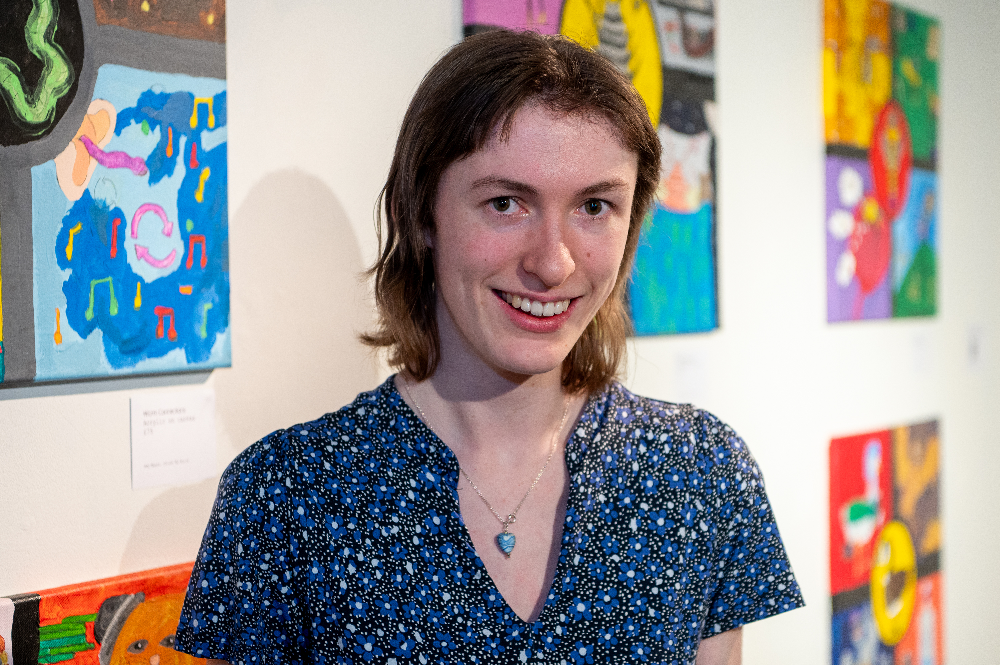

About Me
I am a 25 year old artist based in Guildford, living with cerebral palsy, epilepsy and autism. My journey into the world of art began in 2019. After leaving school, I was struggling with my disabilities and feeling unsure about my future.
Then I joined Artventure Trust in Guildford. They provided a relaxed supportive space in which I could experiment with different art styles and mediums without pressure. It was there that I discovered my voice as an artist. I found that art gave me a way to channel my ideas and express my unique perspective.
I love painting with vibrant colours. Much of my work is created using vivid acrylics, however I also enjoy painting with ink and watercolour especially if I need to include more detail or softer tones.
My style has grown naturally over time, shaped by:
- My travels and experiences: I have been lucky to go to other parts of the world and of course we have so much to see in this country. I take plenty of photos and then enjoy creating a painting which captures the essence of the places I have been. I like showing these moments in my life visually as it brings back happy memories.
- Artistic exploration: I draw inspiration from both the masters and contemporary artists. I love to visit other galleries and exhibitions - the contrasting bright colours used by Van Gogh or Hockney, Kandinsky's abstract pieces, Warhol's Pop Art, the yin and yang compositions of Hilda Klimt, the pointillist style of Seurat and others have all given me ideas to try and to aspire to.
- Intuition and enjoyment: I sometimes just let the brush go with whatever feels right. My Connections pieces are all about fun ideas - inspired by the “Connections” game I like to play on the New York Times website. See if you can work them out!
In April 2026, I was very proud that Artventure helped me present my first solo exhibition at the Lightbox Gallery in Woking. I am also so excited that DAiSY have nominated me for the shortlist to take part in the Surrey Artist of the Year 2026 exhibition to be held at the New Ashgate Gallery in Farnham from September to November 2026.
For me, art is part of my life and a way to connect with others and share the brightness I see in the world. I am proud of the unique style I have created and excited for future projects.
